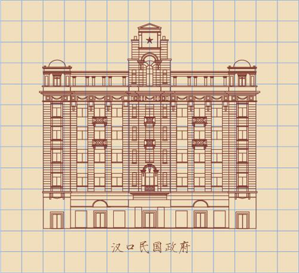

所在街区：江汉区中山大道696号 建筑风格：古典主义 建造年代：上世纪20年代初 现存情况：甲子大饭店

位于中山大道696号的甲子大饭店，为武汉市优秀历史建筑，始建于上世纪20年代初，1924年开张。今年5月，这栋白色西式建筑楼顶上存在了20余年的3间铁架违建被拆除。16日，记者到现场探访时，惊奇地发现，揭开"面纱"的甲子饭店有些新变化：原来破损的玻璃已经换新，每扇窗户上还多了一个折叠式枣红色雨阳篷，平添一份洋气。住在甲子饭店背后集庆里社区的老居民罗师傅说："原先外墙上有些破损的葡萄雕花都已经补好了，墙面原先的水刷石结构也恢复了，还加了雨阳篷，改造后更像从前的大饭店。"于中山大道696号的甲子大饭店，为武汉市优秀历史建筑，始建于上世纪20年代初，1924年开张。
16日，记者到现场探访时，惊奇地发现，揭开"面纱"的甲子大饭店有些新变化：原来破损的玻璃已经换新，每扇窗户上还多了一个折叠式枣红色雨阳篷，平添一份洋气。
上世纪90年代，甲子大饭店搬离，武汉市对这幢房子进行了翻修。1楼整层改建成门面，楼上住家。外立面原有的水刷石结构看不见了，此次都得以恢复。
谭刚毅强调，最早甲子大饭店是有整齐的雨阳篷。武汉具有夏天酷热、冬天湿冷的气候特征，而雨阳篷除了美观洋气，也具有调节室内温度的作用。这次将这些雨阳篷重现出来，是一种生活方式、风格特征和城市记忆的体现。